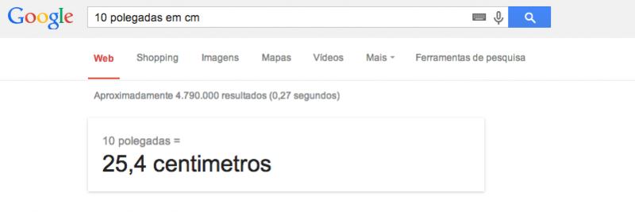

Melhores dicas

Medidas de roupas e calçados nos EUA
Hoje vamos falar sobre um ponto que muita gente vem nos perguntando nos últimos meses: conversão das medidas de roupas e calçados nos EUA. Essa é uma informação que ao mesmo tempo que é fácil de achar pela internet é difícil de confiar, pois cada site que você acessa tem valores e tabelas muito diferentes entre si.
Sei que roupa é roupa e que no fim, uma marca pode acabar optando por medidas ou nomenclaturas diferentes das outras, mas nos EUA o padrão é consideravelmente respeitado. Confesso aqui que mesmo depois de muitas viagens aos Estados Unidos, nunca aprendi a relação entre os tamanhos do Brasil e os de lá, por isso, decidi pesquisar em fontes mais oficiais, como o Guia de Turismo da Folha e outros guias de viagens internacionais para poder escrever essa matéria.
Nas nossas viagens, bem como nos guias que pesquisamos para escrever essa matéria, destacamos as seguintes dicas para quem está querendo renovar o guarda roupas nos outlets americanos:
- Experimentar sempre: tamanho é tamanho, mas nada como experimentar o que você pretende comprar. Tem coisa que por mais que seja o seu tamanho, não fica legal quando você coloca no corpo, então pra não voltar pro Brasil com roupas que você não vai usar, melhor perder um tempinho na fila do provador e confiar menos no que diz a etiqueta do produto.
- Conheça a fita métrica: essa dica é muito útil para quem vai comprar roupa pela internet. Os sites em geral colocam não só o tamanho da peça, mas também as medidas em centímetros ou polegadas. É hora então de procurar uma fita métrica na sua casa e medir altura da perna, cintura, quadril, peitoral e por aí vai. Algumas referências que colocamos abaixo, seguem o padrão de medidas que podem ser tiradas com uma fita métrica. Pra quem vai comprar algo de presente nos EUA, vale não só levar as medidas anotadas, como também levar uma pequena fita para ajudar na hora da compra.
- Inglês básico: na hora de ler as etiquetas, vale saber um pouco de inglês comoSmall ou “S” (pequeno ou “P), Medium ou “M” (médio), Large ou “L” (grande ou “G”),Extra Large ou “XL” (o famoso “GG”) são usados para definir o tamanho da peça. Outros termos como Tall (alto), Short (curto ou baixinho) e Petit (do francês “pequenininho”) também podem ser usados em algumas lojas.
- Medidas diferentes: nos EUA não se usa muito centímetros e sim polegadas, ou do inglês, inches. Vale aqui saber que 1 inch = 2,54cm. Se você estiver com preguiça de fazer a conta da conversão das medidas, basta jogar no Google “10 inches in cm” ou “10 polegadas em cm” ou qualquer outra medida, que ele te devolve o resultado. Assim olha:
- Política de trocas: trocar produtos nos EUA é muito tranquilo, mas se não estiver com certeza de que uma roupa caiu legal, não tire a etiqueta dela. Sempre dá tempo de voltar na loja até o fim da viagem para trocá-la e para isso, basta ir até o caixa e dizer que você quer “return” ou “exchange“.
- Cada um no seu quadrado: assim como no Brasil uma roupa feminina tamanho P não tem o mesmo tamanho de um P de uma roupa masculina, nos EUA as medidas são diferentes. Fique atento nas tabelas abaixo, para ver a diferença entre as medidas para homens, mulheres e crianças. Além disso, ser P no Brasil não significa ser S nos EUA. Os tamanhos podem variar bastante (em geral para menos).
- Calça de dois tamanhos: você vai notar que em muitas marcas, as calças, principalmente as jeans, terão 2 tamanhos estampados na etiquetas separados por uma barra, como por exemplo 32/30. Isso significa que o primeiro número é a medida da cintura (veja a sua medida nas tabelas abaixo) e o segundo, a altura da perna. O legal disso lá nos Estados Unidos é que você tem calças do mesmo tamanho, com diferentes alturas, ou seja, dificilmente você vai precisar fazer a barra da sua calça. E fique tranquilo pois você vai aprender qual é o seu tamanho depois de experimentar alguns modelos.
As tabelas são muito úteis para o momento da compra, então colocamos todas elas em um PDF para que você possa imprimir e levar para o shopping. Clique aqui para fazer o download.
| Medidas de roupas para homens nos EUA | |||||
|---|---|---|---|---|---|
| Tamanho (inglês / português) | Altura / Height (cm) | Peitoral / Chest (cm) | Cintura / Waist (cm) | Quadril / Hips (cm) | Jeans (polegadas) |
| XS / PP | 165-169 | 82-89 | 66-72 | 85-90 | 28 |
| S / P | 170-174 | 90-97 | 73-79 | 91-96 | 30 |
| M / M | 175-179 | 98-105 | 80-85 | 97-102 | 32 |
| L / G | 180-184 | 106-113 | 86-93 | 103-108 | 34 |
| XL / GG | 185-189 | 114-121 | 94-99 | 109-114 | 36 |
| Medidas de camisas para homens nos EUA | |
|---|---|
| Tamanho Brasil | Tamanho EUA |
| 1 | 13 |
| 2 | 14 |
| 3 | 15 |
| 4 | 16 |
| 5 | 17 |
| 6 | 18 |
| 37 | 15 |
| 39 | 15 ½ |
| 40 | 16 |
| 41 | 16 ½ |
| 42 | 17 |
| 43 | 17 ½ |
| 44 | 18 |
| Medidas de ternos para homens nos EUA | |
|---|---|
| Tamanho Brasil | Tamanho EUA |
| 46 | 36 |
| 48 | 40 |
| 50 | 44 |
| 52 | 46 |
| 54 | 48 |
| Medidas de roupas para muheres nos EUA | |||||
|---|---|---|---|---|---|
| Tamanho (inglês / português) |
Altura / Height (cm) |
Peitoral / Chest (cm) |
Cintura / Waist (cm) |
Quadril / Hips (cm) |
Jeans (polegadas) |
| XS / PP | 158-163 | 82-84 | 60-65 | 84-88 | 26/27 |
| S / P | 163-168 | 84-88 | 65-70 | 88-92 | 27/28 |
| M / M | 168-173 | 88-92 | 70-75 | 92-96 | 29 |
| L / G | 173-178 | 92-96 | 75-80 | 96-100 | 30/31 |
| XL / GG | 178-183 | 96-100 | 80-85 | 100-104 | 32 |
| Medidas de calças para mulheres nos EUA | |
|---|---|
| Tamanho Brasil |
Tamanho EUA |
| 34 | 0 |
| 36 | 2 |
| 38 | 4 |
| 40 | 6 |
| 42 | 8 |
| 44 | 10 |
| 46 | 12 |
| 48 | 14 |
| 50 | 16 |
| 52 | 18 |
| 54 | 20 |
| 56 | 22 |
| Medidas de vestidos, saias e casacos para muheres nos EUA | |
|---|---|
| Tamanho Brasil | Tamanho EUA |
| 36 | 2 |
| 38 | 4 |
| 40 | 6 |
| 42 | 8 |
| 44 | 10 |
| 46 | 12 |
| 48 | 14 |
| 50 | 16 |
| Medidas de blusas e malhas para muheres nos EUA | |
|---|---|
| Tamanho Brasil | Tamanho EUA |
| 36 | 2 |
| 38 | 4 |
| 40 | 6 |
| 42 | 8 |
| 44 | 10 |
| 46 | 12 |
| 48 | 14 |
| 50 | 16 |
| Medidas de roupas para crianças nos EUA | |
|---|---|
| Tamanho Brasil |
Tamanho EUA |
| 2 | 2-3 |
| 4 | 4-5 |
| 6 | 6-6x |
| 8 | 7-8 |
| 10 | 10 |
| 12 | 12 |
| 14 | 14 |
| 16+ | 16+ |
| Numeração calçados Brasil e EUA | |||
|---|---|---|---|
| Numeração Brasil | Numeracao EUA – Crianças | Numeração EUA – Mulheres | Numeração EUA – Homens |
| 18 | 3 1½ | - | - |
| 19 | 4 | - | - |
| 20 | 5 | - | - |
| 21 | 6 | - | - |
| 22 | 7 | - | - |
| 23 | 7 ½ | - | - |
| 24 | 8 ½ | - | - |
| 25 | 9 | - | - |
| 26 | 10 | - | - |
| 27 | 11 | - | - |
| 28 | 11 ½ | - | - |
| 29 | 12 ½ | - | - |
| 30 | 13 | - | - |
| 31 | 1 (Y) | - | - |
| 32 | 2 (Y) | - | - |
| 33 | 2 ½ (Y) | 4 ½ | - |
| 34 | 3 (Y) | 5 ½ | 5 |
| 35 | - | 6 | 5 ½ |
| 36 | - | 7 | 6 |
| 37 | - | 7 ½ | 6 ½ |
| 38 | - | 8 | 7 |
| 39 | - | 9 | 7 ½ |
| 40 | - | 10 | 8 ½ |
| 41 | - | 10 ½ | 9 ½ |
| 42 | - | 11 ½ | 10 |
| 43 | - | - | 11 |
| 44 | - | - | 12 |
| 45 | - | - | 12 ½ |
| 46 | - | - | 13 ½ |
Pronto! Com essas dicas, espero que tenha ficado mais fácil correr para as compras e não perder tempo na hora de escolher o seu tamanho.